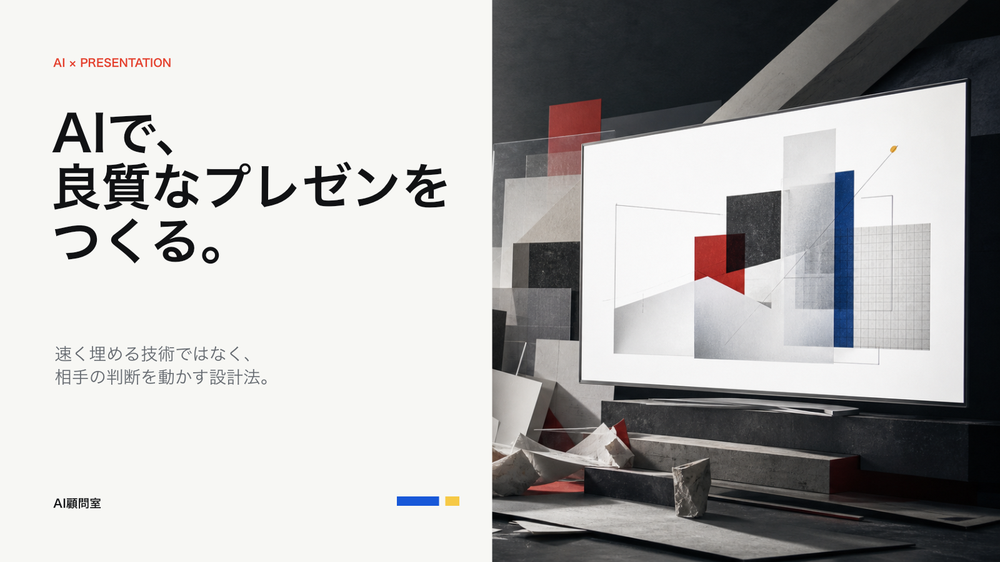
22スライド
4設計レイヤー
3実務プロンプト
5品質検査
速く作るだけでは、良い資料にならない。
AIは空白を埋めるのが得意です。人は、何を残し、何を捨て、どの判断へ導くかを決めます。
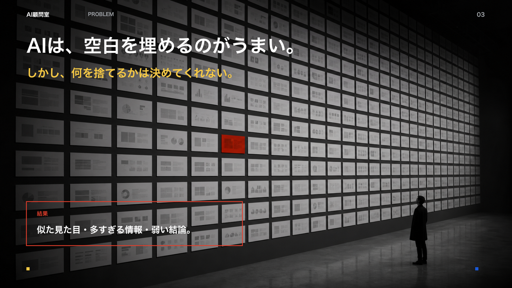
最初に、資料の骨格を決める。
ページを増やす前に、判断の順番と各ページの役割を固定します。
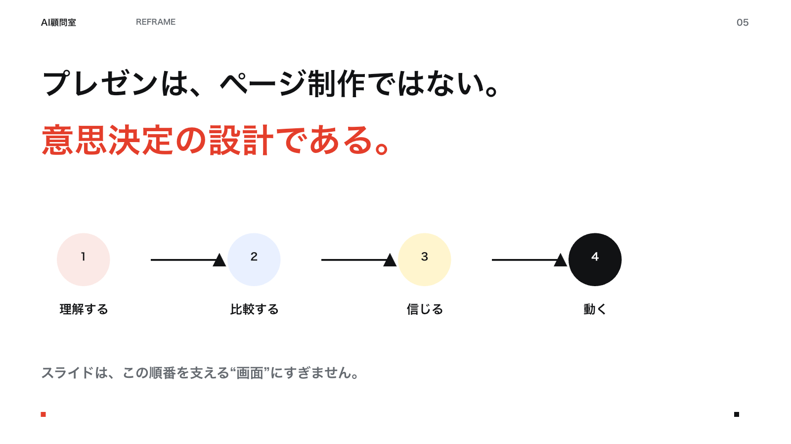
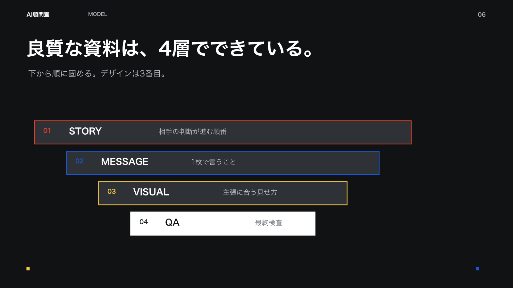
上から順に決める
判断の順番、1枚の主張、見せ方、最終検査。デザインは最後に整えます。
文字量ではなく、視線の流れを設計する。
同じレイアウトを繰り返さず、主張に合う見せ方を選びます。
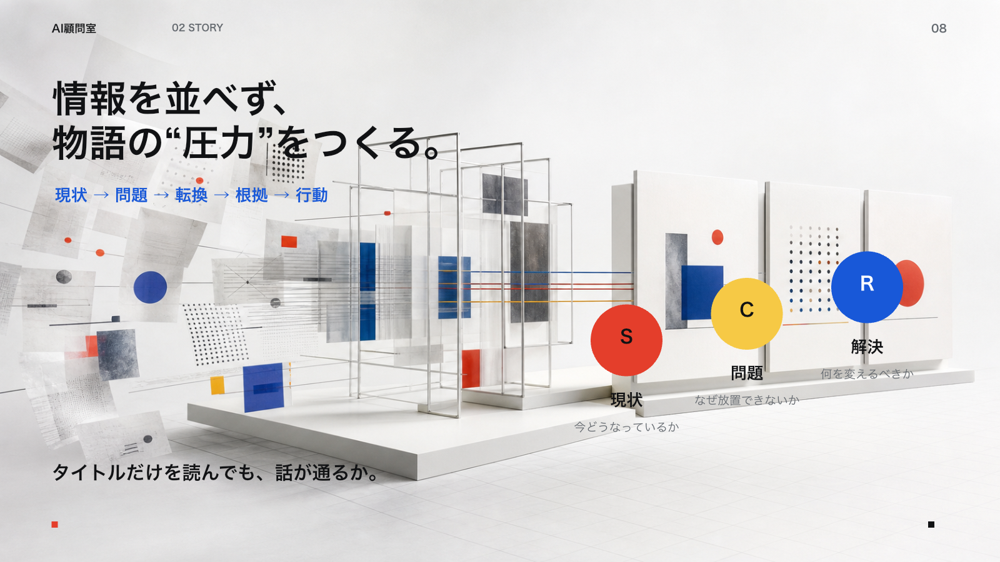
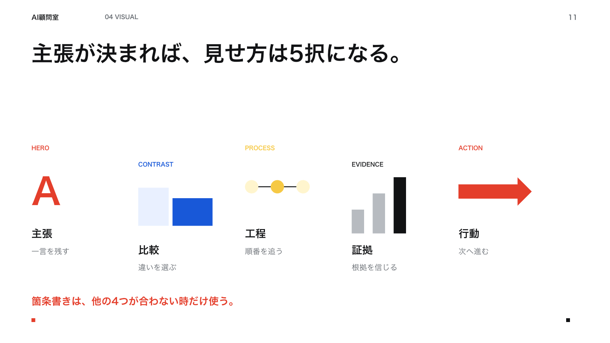
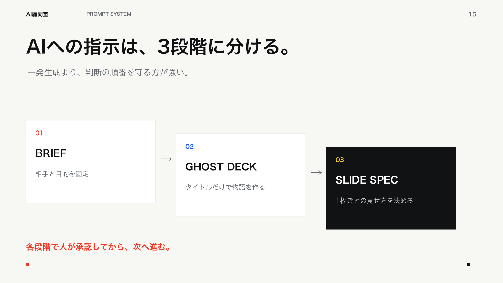
そのまま使える、3つの実務プロンプト。
設計条件、タイトルの物語、1枚ごとの設計図を順番に作ります。
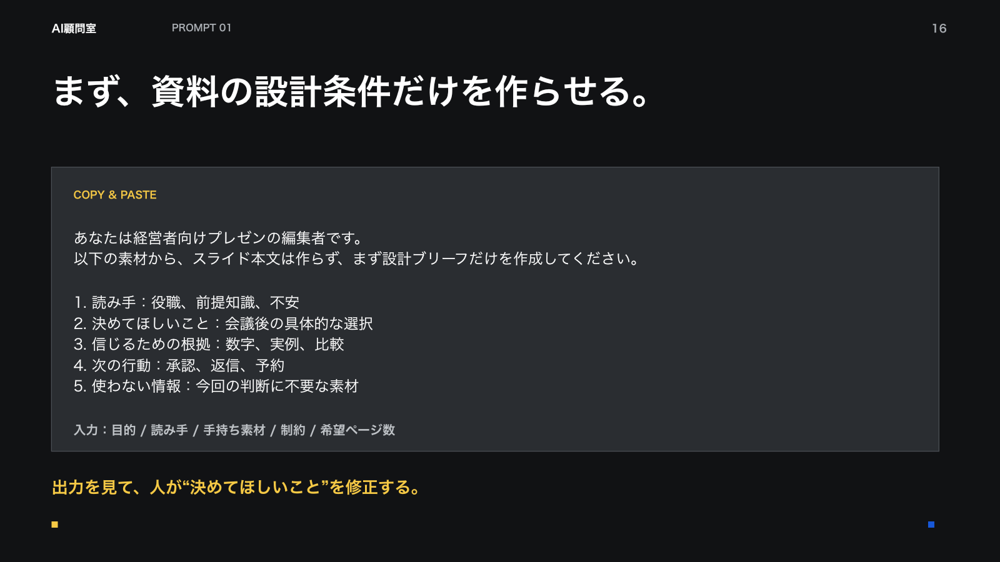
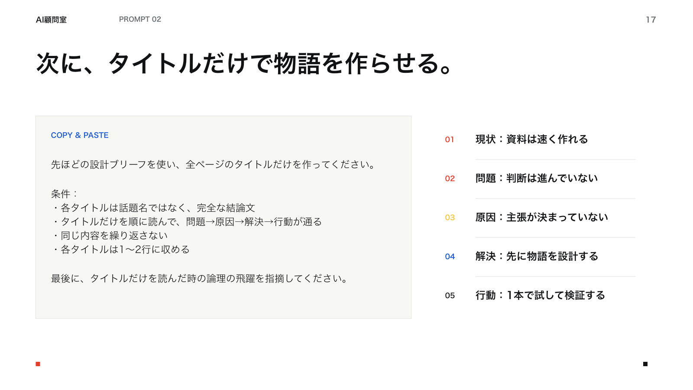
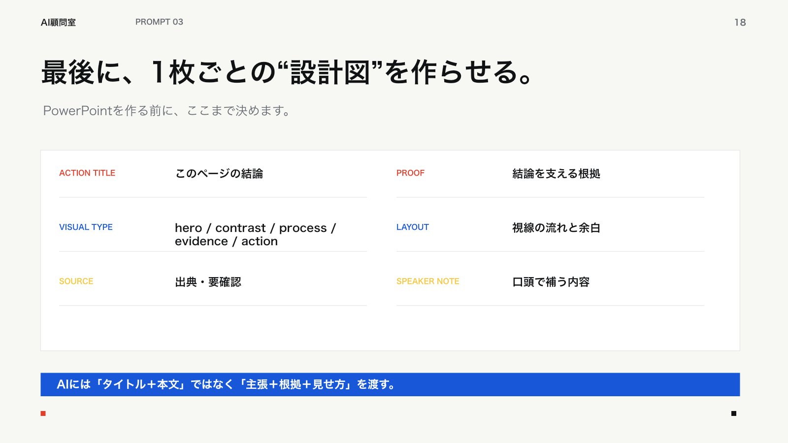
完成は、生成した瞬間ではない。
話が通るか。主張が一つか。文字が切れていないか。出典が正しいか。最後に全ページを実寸で確認します。
- ストーリー
- 主張の焦点
- 文字と余白
- 根拠と出典
- 読みやすさ
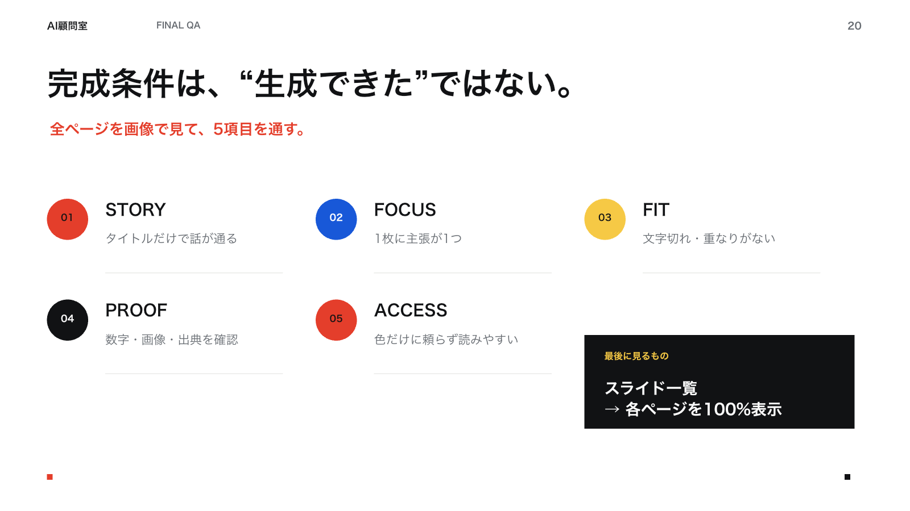
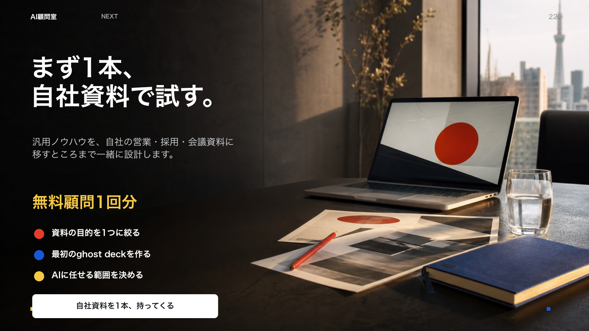